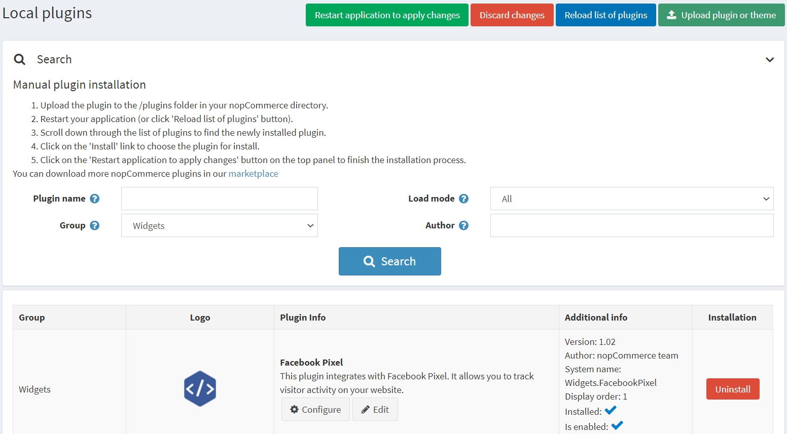
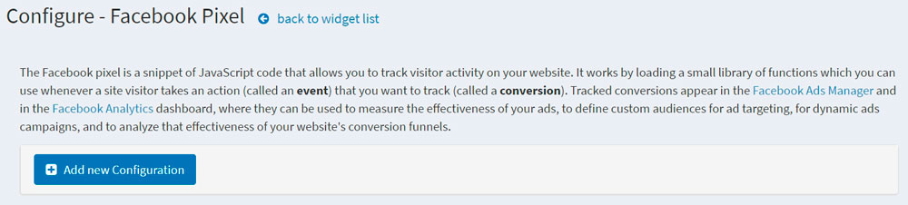
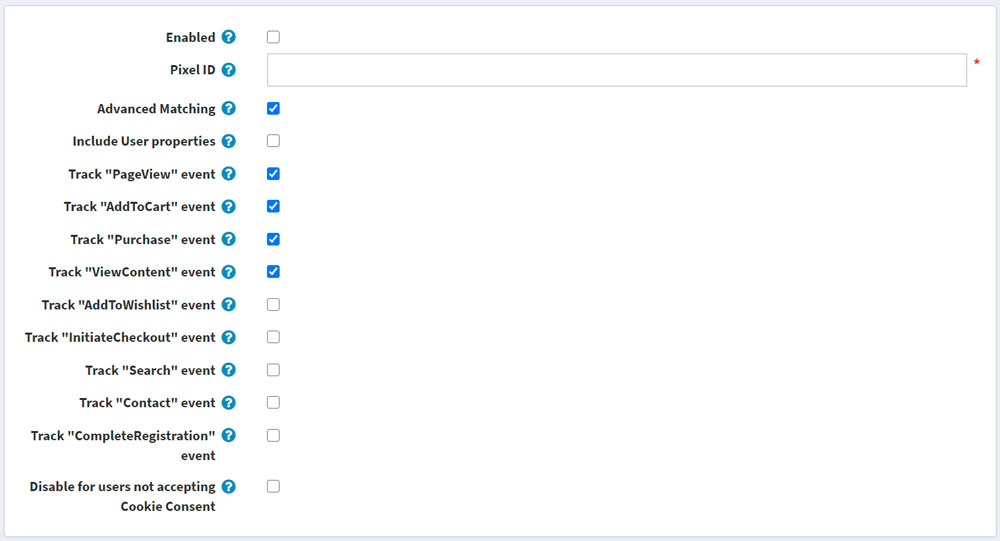
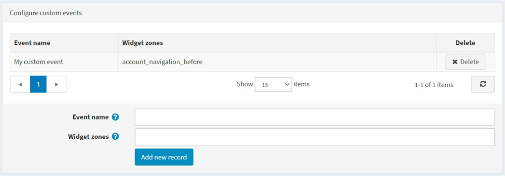

Facebook Pixel 外掛
本章節說明如何將 Facebook Pixel 整合到您的商店中。
什麼是 Facebook Pixel
Facebook Pixel 允許您接收關於商店中採取之行為的資訊，藉此讓您的 Facebook 廣告與目標客群更具相關性。Facebook Pixel 可以協助您了解商店訪客的行為，以及哪種廣告策略最能達成您的業務目標。
追蹤到的轉換會顯示在 Facebook Ads Manager 和 Facebook Analytics 儀表板中，您可以在這些地方衡量廣告成效、定義用於廣告投放或動態廣告活動的自訂受眾，並分析網站轉換漏斗的有效性。
Facebook Pixel 外掛的功能
nopCommerce 的 Facebook Pixel 外掛會貼上一段 JavaScript 程式碼片段，讓您可以追蹤訪客在您網站上的活動。它的運作方式是載入一小組函式庫，並在顧客執行任何動作時觸發。
安裝並啟用外掛
Facebook Pixel 外掛是 nopCommerce 內建的外掛。您可以在這裡找到它：設定 → 本地外掛。若要更快速地找到該外掛，請使用搜尋面板中的 群組 (Group) 欄位，將外掛篩選為 Widgets 類型：

若外掛尚未安裝，請使用 安裝 (Install) 按鈕進行安裝。接著，點擊 編輯 (Edit) 按鈕來啟用它。此時您會看到 編輯外掛詳細資料 (Edit plugin details) 視窗。勾選 已啟用 (Is enabled) 核取方塊，然後點擊 儲存 (Save) 按鈕。
如何設定此外掛
點擊 Configure 按鈕。您將會看到 Configure - Facebook Pixel 頁面視窗：

點擊 Add new configuration 按鈕。
填寫以下表單以設定此外掛：

- 勾選 Enabled 核取方塊以啟用此 Facebook Pixel 設定。
- 輸入您的 Pixel ID，您可以從 Ads Manager → Events Manager 中找到它。如果您尚未建立 Pixel，請遵循這些說明來建立一個 — 您只需要該 Pixel 的 ID 即可。
- Advanced Matching：如果勾選，部分訪客的資料（以雜湊格式）將會被 Facebook Pixel 收集。如果您已透過 Events Manager 自動實作進階比對，請取消勾選此設定。
- Include User properties：勾選以將 User properties（關於使用者的資料）包含在 Pixel 中。之後，您可以在 Facebook Analytics 儀表板中的 People → User Properties 下查看使用者屬性。
接下來，您將看到事件列表。標準事件是預先定義的訪客動作，對應於常見的轉換相關活動，例如搜尋商品、查看商品或購買商品。
- Track "PageView" event：勾選以啟用當使用者進入網站頁面時，追蹤此標準事件。
- Track "AddToCart" event：勾選以啟用當商品加入購物車時，追蹤此標準事件。
- Track "Purchase" event：勾選以啟用當訂單成立時，追蹤此標準事件。
- Track "ViewContent" event：勾選以啟用當使用者進入商品詳細頁面時，追蹤此標準事件。
- Track "AddToWishlist" event：勾選以啟用當商品加入願望清單時，追蹤此標準事件。
- Track "InitiateCheckout" event：勾選以啟用當使用者進入結帳流程前，追蹤此標準事件。
- Track "Search" event：勾選以啟用當進行搜尋時，追蹤此標準事件。
- Track "Contact" event：勾選以啟用當使用者透過「聯絡我們」表單提交問題時，追蹤此標準事件。
- Track "CompleteRegistration" event：勾選以啟用當註冊表單完成時，追蹤此標準事件。
Note
作為額外參數，某些事件會包含商品 SKU 或商品組合 SKU；請確保它們在您的商品目錄中已正確填寫。
- Disable for users not accepting Cookie Consent：勾選此項可針對未接受 Cookie 同意的使用者停用 Facebook Pixel。如果您在受《一般資料保護規則》（GDPR）規範的國家/地區經營業務，您可能會需要此功能。您同時需要在後台的 Configuration → Settings → General settings 頁面啟用 DisplayEuCookieLawWarning 設定，以便向使用者顯示 Cookie 同意提示。
Note
《一般資料保護規則》（GDPR）於 2018 年 5 月 25 日生效，為歐洲建立了統一的資料保護規則。與 Facebook 公司合作進行廣告業務的企業，可以繼續以目前的方式使用 Facebook 平台與解決方案。
設定自訂事件
Note
您必須先建立並儲存目前的設定後，才能看到此面板！
如果預先定義的標準事件不符合您的需求，您可以追蹤自訂事件，這些事件也可用於定義用於廣告最佳化的自訂受眾。 您可以在下方進行設定。指定名稱並選擇要追蹤自訂事件的小工具區域（widget zones）。如果您不知道該為自訂事件使用哪個區域，可以在我們的 論壇 中詢問。
